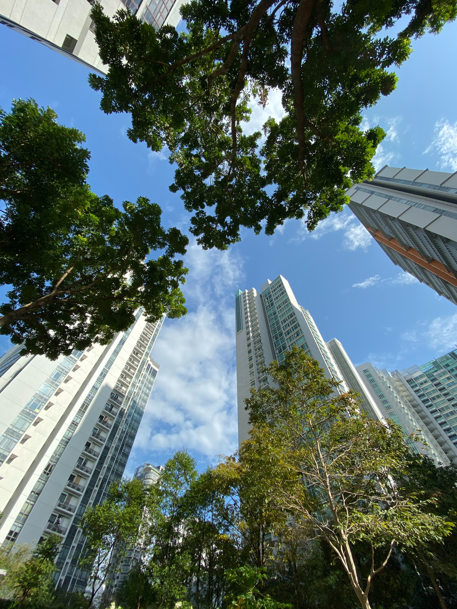
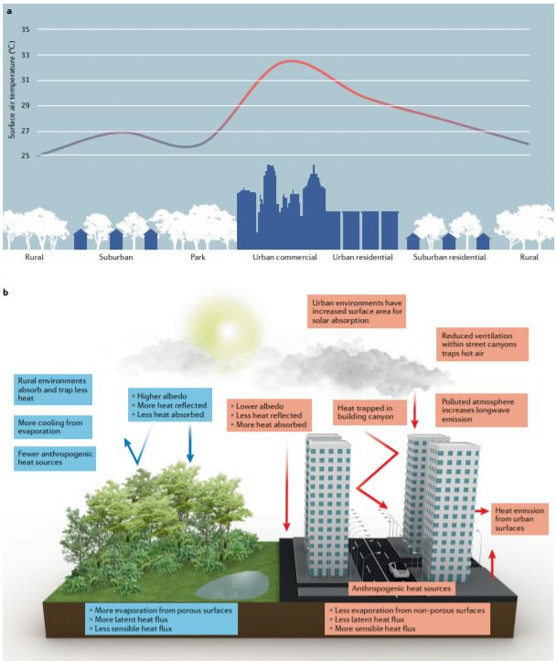
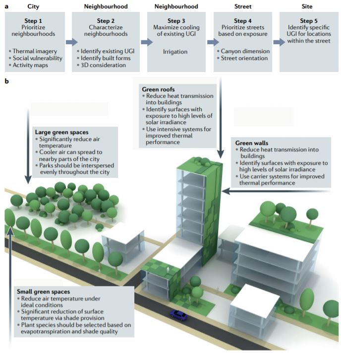
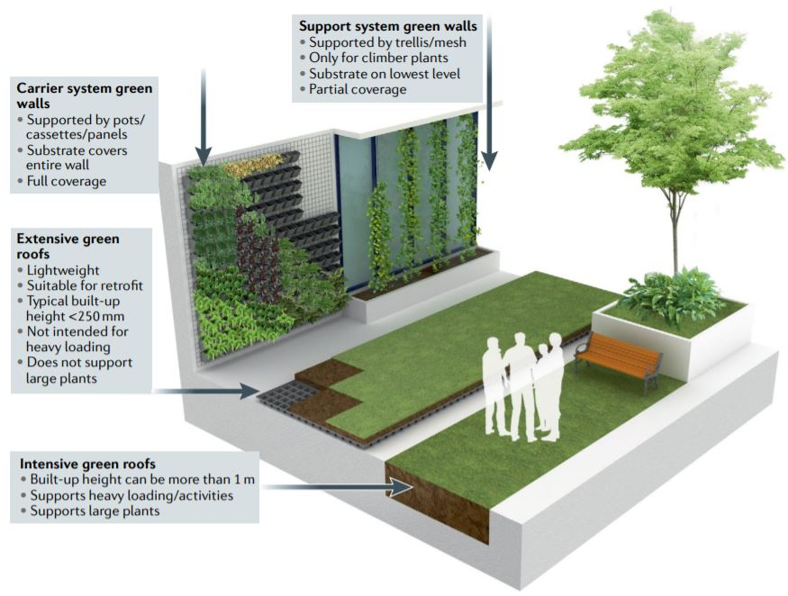
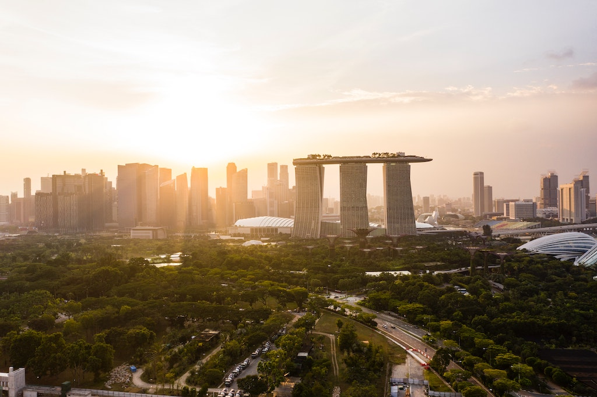
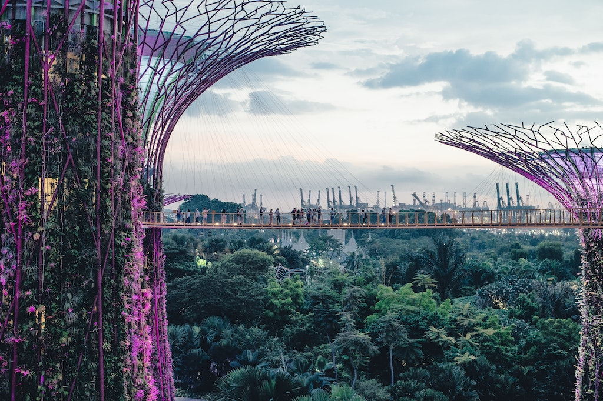

This mini-lecture introduces the challenges faced with increasing temperatures in urban areas. Different nature-based solutions that can be used for addressing the urban heat island effect are presented. The mini-lecture closes with a case study where these solutions are applied in practice.
Cities around the world are increasingly threatened by rising temperatures. In Europe, over 140,000 deaths have been associated with 83 heatwaves since the beginning of the century (UNEP 2020). By 2050 it is expected that around 1,000 cities will experience summertime temperature highs of 25°C, implying an increase of 800% of urban populations exposed to such temperatures (Kapos et al. 2019). Such increases in heat will have adverse impacts on human health, well-being, urban infrastructure and services, particularly for cities in the most vulnerable and disadvantaged areas (Kapos et al. 2019).
These increasing temperatures will change the demand for energy. The International Energy Agency (IEA) estimated that cooling degree days will increase by an average of approximately 25% by 2050 at the global level. This would result in a threefold increase in energy demand for cooling during that time period, from 2,020TWh to 6,200TWh in 2050, all in the form of electricity (Hall et al. 2019). High temperatures could therefore incur an economic cost of USD2 trillion globally by 2030 (Kapos et al. 2019). Moreover, the generation of the electricity required to operate air conditioners will itself produces additional emissions, leading towards a vicious cycle of warming and cooling (UNEP 2020).
The health impacts of heat waves are exacerbated in cities due to the high density of buildings, high concentration of air pollutants and the fragmentation of green areas (Depietri, Welle, and Renaud 2013). The more the planet warms, the more cities require new ways of keeping temperatures down (UNEP 2020). Nature-based solutions, or “urban greening” can lower local temperatures through canopy cover, shading and evaporative cooling (Kapos et al. 2019), mitigating the human health consequences from increased temperatures (Bowler et al. 2010).

Figure 16.4.1: Introduction to natural solutions for heat mitigation in urban settings (Unsplash photograph: Jarrett Tan)
Atmospheric temperature within forested or natural areas have been shown to be lower than that in non-green urban sites (Bowler et al. 2010). This is due to a phenomenon called the urban heat island (UHI) effect. City landscapes are dominated by grey infrastructure, which consists of hard, impervious surfaces such as buildings and roads, which trap and radiate heat, keeping the city warm long after the sun has gone down (see Figure 16.4.2) (UNEP 2020; Makido, Hellman, and Shandas 2019; Wong et al. 2021). The low albedo, low green cover and low moisture availability within cities exacerbate this effect (Depietri, Welle, and Renaud 2013). Moreover, waste heat from engines and other energy-consuming equipment in industry, air-conditioning and transportation further add heat (and air pollution) to the city air circulation system (UNEP 2020; Depietri, Welle, and Renaud 2013).

Figure 16.4.2: Conceptualisation of the urban heat island effect (Wong et al. 2021)
The UHI effect, combined with globally warming temperatures, will likely cause an increase in the frequency and intensity of extreme heat events in cities (Makido, Hellman, and Shandas 2019). Often, as poorer neighbourhoods have less accessibility to air conditioners and breezy green spaces, vulnerable people in these neighbourhoods are at greater risk of health complications related to heat (UNEP 2020).
It is therefore essential to tackle urban heat. Large-scale air conditioning requires significant investment and is very energy-intensive. Nature-based solutions in the form of blue and/or green infrastructure can offer cost-effective cooling via shade and evapotranspiration (Makido, Hellman, and Shandas 2019).
The air temperature difference between natural areas and urban areas with less vegetation can be as much as 4°C (Kapos et al. 2019; Bowler et al. 2010). Nature-based solutions are therefore gaining traction for mitigating the UHI effect, with some studies showing that trees within cities can cut 10% of the costs required for air conditioning (Kapos et al. 2019). Increasing the number of water bodies in cities can also reduce urban temperatures by up to 0.9°C (Kapos et al. 2019).
Nature-based solutions for mitigating the UHI effect include increasing canopy cover, increasing the number and size of green spaces, restoring forests and wetlands, and constructing green roofs and agroforestry systems that include trees in cultivated and settled areas (Kapos et al. 2019; Wong et al. 2021). These measures can be complemented with other solutions, such as using light colours for roofs, walls and pavements to reflect more sunlight (Kapos et al. 2019). These natural processes increase shading and provide evaporative cooling (Kapos et al. 2019; Bowler et al. 2010; Gill et al. 2007). Evapotranspiration consumes energy from solar radiation and translates this into latent heat rather than sensible heat, cooling the leaf and the surrounding air, whereas urban surfaces absorb and retain heat when exposed to solar radiation (Bowler et al. 2010; Wong et al. 2021).

Figure 16.4.3: (a) Proposed framework for implementing nature-based solutions in urban environments at different scales; and (b) a summary of cooling benefits from nature-based solutions (Wong et al. 2021)
These nature-based solutions also provide co-benefits, such as carbon sequestration and storage, improved soil fertility, pollution control, biodiversity conservation, tourism opportunities, and improved physical and mental health in urban populations (Kapos et al. 2019).
In many urban environments, the built form is already established, leaving little room for creating large new greenspaces. Green and blue infrastructure will thus have to be added to cities creatively, through the opportunities of greening buildings (Gill et al. 2007). Similar to greenery on the ground, greenery on buildings cools the building (through enhanced thermal insulation) and surrounding air by modifying evapotranspiration, providing shade and raising the albedo (Wong et al. 2021). Figure 16.4.4 below illustrates the different opportunities for heat mitigation using nature-based solutions at the building scale.

Figure 16.4.4: Nature-based solutions for heat mitigation at the building scale (Wong et al. 2021)
There are a few considerations associated with the implementation of green walls and green roofs. For instance, the effectiveness of green walls and green roofs is influenced by their placement, specifically through self-shading or overshadowing from surrounding buildings (Wong et al. 2021). In addition, the cooling effect of vertical and rooftop greenery is more effective in the summer, when there is higher evapotranspiration and foliage density.
These nature-based solutions for regulating external air temperatures can also be applied indoors. Figure 16.4.5 illustrates a photograph of the David Attenborough Building in Cambridge, UK. Here, a four-storey tall living green wall naturally cools the building, filters the air, and stimulates health and well-being in the working environment.
Figure 16.4.5: Indoor green wall in the David Attenborough Building, Cambridge, UK (photograph by author)
Singapore is a city state with one of the highest population densities in the world. It is almost 100% urbanised, with a population of over 5.6 million (growing at 1.2% annually), living in an area just larger than 720km2 (Vahanvati and Keating 2020). The city suffers from the UHI effect, with summer temperatures being up to 7°C higher in the central business district than in surrounding areas (Vahanvati and Keating 2020). With the population of Singapore growing, and global temperatures rising, the UHI effect is certain to challenge the well-being of local inhabitants.
The government-funded “Cooling Singapore” project has joined government agencies with local and international researchers to develop strategies to reduce the UHI effect and improve outdoor thermal comfort (Vahanvati and Keating 2020). The collaboration extends to local councils, which will see the implementation of nature-based solutions in buildings, landscapes, parklands and waterways, and in transport and energy infrastructure (Vahanvati and Keating 2020). Currently, parks, nature reserves and reservoirs occupy 13% of land use (Figure 16.4.6). In order to increase the amount of green and blue infrastructure on the small island, it is now obligatory to include greenery on roofs and on upper levels of buildings or walls (Vahanvati and Keating 2020). Green roofs and walls are attractive nature-based solutions for Singapore because (Ruefenacht and Acero 2017):
The elevated position of the sun throughout the year produces intense vertical radiation over planar surfaces such as roofs
The high humidity of this tropical city increases the performance and growth of vegetation, and minimises the water required for maintenance of vegetation.
Overall, studies have shown that temperatures within the large green areas of the city have reduced by 4.0°C compared to the other areas of the urban centre (Wong and Yu 2005). These urban parks have also been implemented in an unrivalled aesthetical way, illustrating the creativity and innovation behind the urban landscape design of the city.
 
Figure 16.4.6: Singapore’s use of nature-based solutions in mitigating the urban heat island effect. Unsplash photographs by: Kirill Petropavlov (top) and Annie Spratt (bottom).
This mini-lecture has introduced the challenges of rising urban temperatures, defined the urban heat island effect, and provided nature-based solutions for mitigating urban heat at both the city and building scale. Through the “Cooling Singapore” project, these nature-based solutions are shown in practice.